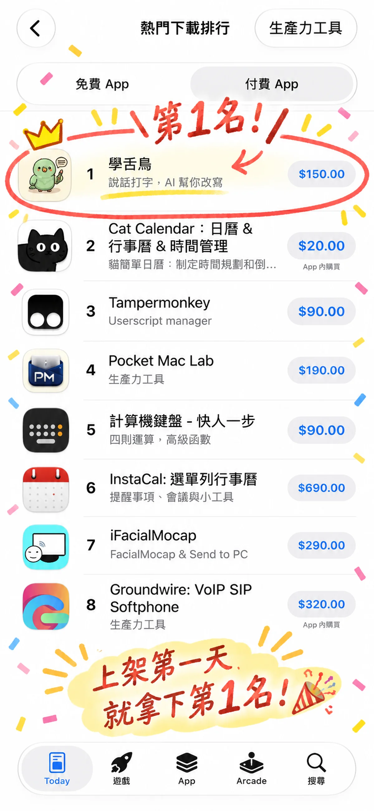
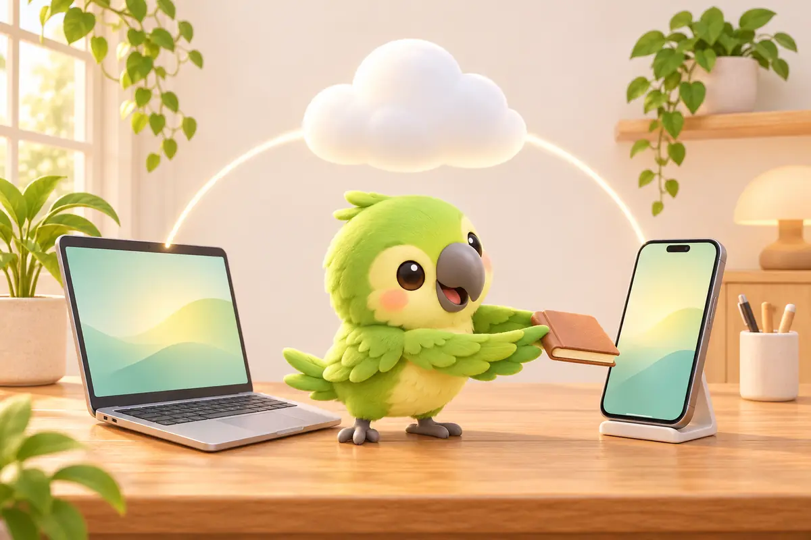

用 iPhone 相机扫描学舌鸟 iPhone 键盘 · ¥38 买断
用 iPhone 相机扫描学舌鸟 iPhone 键盘 · ¥38 买断
我是 Sona Orbit，一个人开发学舌鸟的独立开发者，这篇写的是我自己的产品。排名是 2026-11-08 台湾区 App Store“生产力工具”付费 App 排行的画面；价格、App 大小、系统需求和家人共享以 App Store 页面为准，功能说明以iPhone 版介绍页为准。
1. 登上生产力工具付费榜第 1 名
iPhone 版上架后，在台湾区 App Store“生产力工具”的付费 App 排行榜爬到了第 1 名，排在 Cat Calendar、Tampermonkey、Pocket Mac Lab 这些老牌工具前面。

我一个人从 Mac 版做到 iPhone 版，想法很单纯：很多人在 Mac 上习惯按住快捷键讲话，出门用手机回 LINE、写信、记备忘录时，却又回到小屏幕上慢慢戳字，或是让内建听写把早就改过的人名再打错一次。所以 iPhone 版做成一块用说的键盘，而且透过你自己的 iCloud，和 Mac 版共用同一份词典和改写格式。
2. iPhone 版和 Mac 版怎么分工
| 项目 | iPhone 版 | Mac 版 |
|---|---|---|
| 价格 | NT$150 一次买断，不订阅；支持家人共享（最多 6 人） | 免费 |
| 怎么说话 | 系统键盘：在任何输入框切到学舌鸟键盘，点麦克风说话 | 全域快捷键：按住 右 ⌥ ＋ 右 ⌘ 说话，放开就贴到光标位置 |
| 语音识别 | iPhone 内建的识别，在手机上转成文字；录音不存档、不上传 | 本机模型，可下载切换 SenseVoice Small、Qwen3-ASR、Breeze-ASR-25 等 |
| 语气提醒 | 话太冲时键盘亮橘点，附一句替代说法 | 同样会提醒；累积 20 笔反馈后，可以在 Mac 上训练你自己的分寸 |
| AI 改写与翻译 | Apple 内建，或自己的 API key（Gemini、OpenAI、OpenRouter、Groq、自订） | Apple 内建，或自己的 API key（免费 Gemini key 等） |
| 和另一台共用 | 开了 iCloud 云碟后，词典、改写格式、我的资料、文字纪录两边共用 | |
| 系统需求 | iOS 26 以上 | Apple 芯片 Mac，macOS 11 以上 |
3. iPhone 版怎么用：一块用说的键盘
手机上最麻烦的，是在录音 App 跟聊天 App 之间来回复制贴上。iPhone 版直接做成键盘：在 LINE、消息、邮件、备忘录里切过去，点一下麦克风就能说。第一次打开 App 有引导，大约一分钟：允许麦克风、加入学舌鸟键盘、允许完整取用。
- 说完就是成品：说话时键盘上有两颗按钮。“完成”照你说的逐字贴上；彩色那颗先用你选的改写格式（例如语气修正、信件格式、条理分明）整理，再贴上。“嗯、那个”和说到一半的改口，贴上前就拿掉了。
- 改写滑杆：选取已经打好的字，用四条滑杆调长短、正式度、语气、条列，按“改写”，结果直接换进输入框。
- 翻译：选取文字，翻成你设置的四种语言（默认中文、English、日本语、한국어），不用切到翻译 App。
- 语气提醒：赶时间回消息最容易话太冲。说的话听起来太直时，键盘上会亮一个橘点，附一句比较好入耳的说法。
- 每句都留著：App 里的“纪录”可以搜寻，也能看整理前的原文。说到一半被电话打断，也能回来找。
- 看小鸟就知道状态：键盘左上角的小鸟有待命、在听、在想、贴好了、遇到问题、睡著六种状态。AI 出问题也会直说原因，例如 key 填错、额度用完、模型下架，并附上解决方法。
4. 和 Mac 一起用：iCloud 共用词典与格式
如果你同时有 Mac 和 iPhone，两边都开 iCloud 云碟，学舌鸟就会透过你自己的 iCloud 共用资料，不用另外注册帐号：
- 词典改一次，两边都听懂：在 Mac 上把常听错的客户名字、同事绰号、英文项目名加进个人词典，出门用 iPhone 回 LINE 时，手机键盘也认得；在手机上加的词，回到 Mac 也生效。
- 自订改写格式共用：在 Mac 上建的格式，iPhone 键盘上也能直接选。
- 我的资料共用：署名、职称、公司填一次，两边用“信件格式”改写时都会带入信件结尾。
- 文字纪录共用：在哪一台说的话，都能在另一台找到。

5. 购买前要知道的限制
- 不能自己下载语音模型：Mac 版可以下载几百 MB 到 1.5 GB 的本机模型；iPhone 上的第三方键盘内存限制很严，塞大模型容易被系统关掉，也比较耗电。所以 iPhone 版用 iPhone 内建的识别，App 只有约 26 MB。识别语言跟著 iPhone 的语言，设置里也能自己换。
- 需要 iOS 26 以上：iOS 26 以前的 iPhone 装不了。
- “Apple 内建”AI 有机型限制：它用的是 iPhone 上的 Apple Intelligence，需要 iPhone 15 Pro、15 Pro Max 或 iPhone 16 以后的机型，系统要 iOS 26.1 以上（繁体中文从 26.1 开始支持），还要在设置里打开 Apple Intelligence。不符合的话，说话打字照样能用；想要 AI 改写和翻译，可以改用自己的 API key。
- 要“允许完整取用”：这是 iOS 对需要和主 App 沟通的键盘用的权限名称，键盘才能请学舌鸟录音、把字放回来。学舌鸟没有帐号、广告和追踪；只有你选“我的 API key”时，要改写的文字会直接送到你选的 AI 服务，不经过我。
6. 常见问题
买了 iPhone 版，用 AI 改写还要付月费吗？
不用付给学舌鸟。手机支持 Apple Intelligence 的话，可以直接选“Apple 内建”，免费而且文字不离开手机；不支持的话，可以申请免费的 Gemini API key 填进去，Gemini 有免费额度，费用由该服务向你收取。
iPhone 和 Mac 怎么同步词典和纪录？
两台登入同一个 Apple 帐号并开启 iCloud 云碟，学舌鸟就会透过你的 iCloud 共用词典、改写格式、我的资料和文字纪录，不用另外注册帐号。
不用 AI 也能用吗？
可以。按“完成”就是照你说的逐字贴上，识别和基本整理都在手机上做。AI 只在你选改写格式、改写滑杆或翻译时才用到。
家人可以一起用吗？
可以。iPhone 版支持 Apple 的家人共享，买一次，最多 6 位家庭成员可以使用。
Mac 版之后会收费吗？
目前 Mac 版维持免费。可以先在 Mac 上试试语音输入、个人词典和语气提醒合不合手，再决定要不要买 iPhone 版。
下载：iPhone 版（App Store，NT$150 买断）｜Mac 版（免费）。延伸阅读：Typeless 替代方案比较、Mac 中文语音输入怎么选。